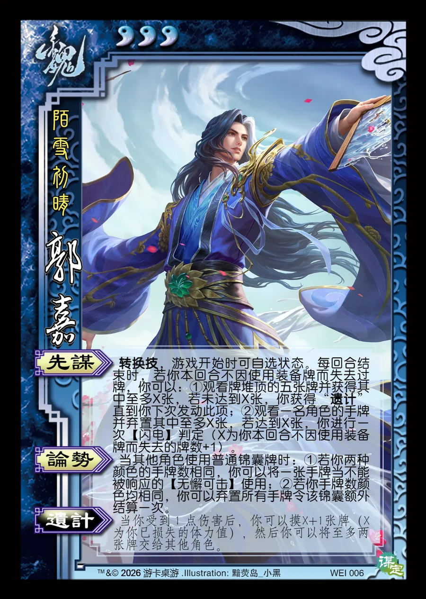

点击卡面查看大图
魏
郭嘉
♥3陌雪初晴
先谋转换技
转换技，游戏开始时可自选状态。每回合结束时，若你本回合不因使用装备牌而失去过牌，你可以：①观看牌堆顶的五张牌并获得其中至多X张，若未达到X张，你获得“遗计”直到你下次发动此项；②观看一名角色的手牌并弃置其中至多X张，若达到X张，你进行一次【闪电】判定（X为你本回合不因使用装备牌而失去的牌数+1）。
论势
当其他角色使用普通锦囊牌时：①若你两种颜色的手牌数相同，你可以将一张手牌当不能被响应的【无懈可击】使用；②若你手牌数颜色均相同，你可以弃置所有手牌令该锦囊额外结算一次。
遗计衍生
当你受到1点伤害后，你可以摸X+1张牌（X为你已损失的体力值），然后你可以将至多两张牌交给其他角色。